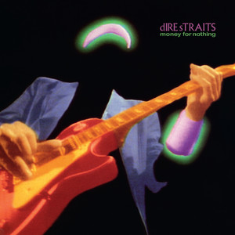
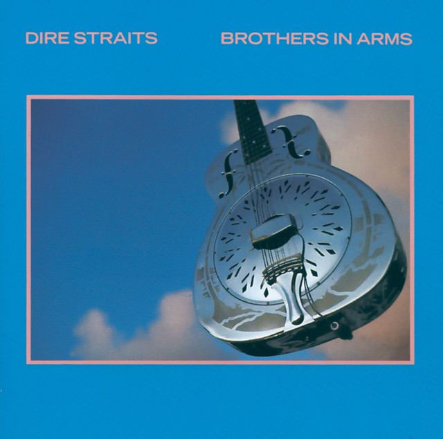
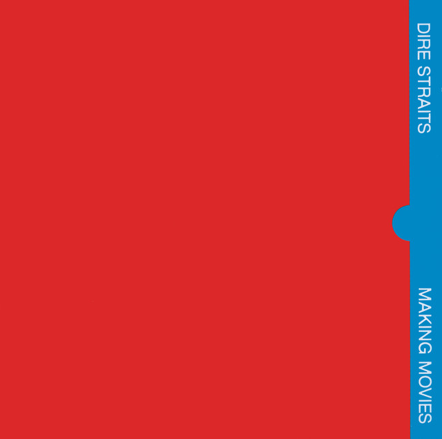
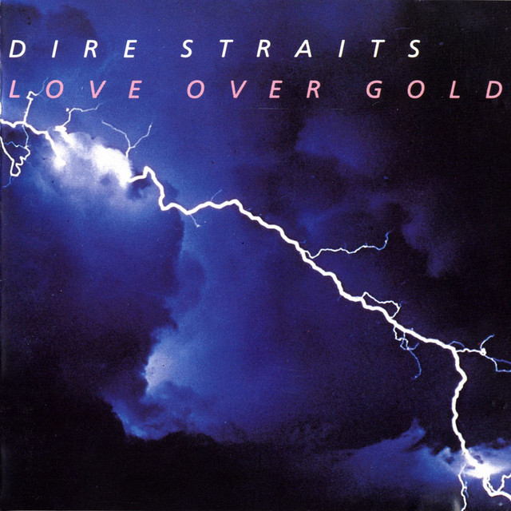
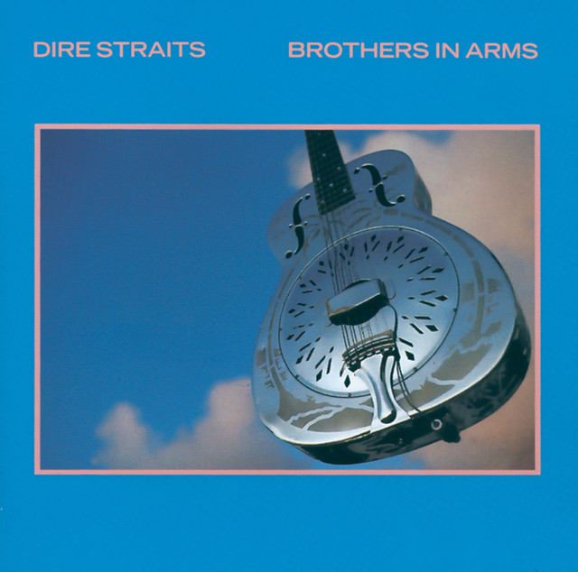
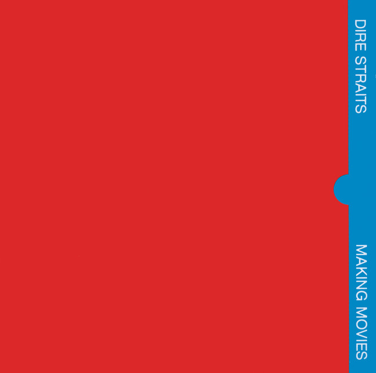
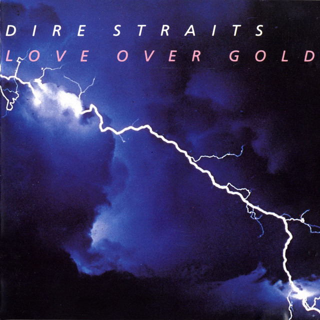

Historia

Dire Straits es una banda britànica formada el 1977, liderada pel guitarrista i compositor Mark Knopfler, que va assolir el exit mundial amb exits com "Sultans of Swing", "Money for Nothing" i "Brothers in Arms".
La banda es va dissoldre el 1995, pero la seva musica continua sent molt popular arreu del mon.
Discografia
· Dire Straits (1978)
· Brothers in Arms (1985)
· Making Movies (1980)
· Love Over Gold (1982)
 





Integrants
· Mark Knopfler: veu principal, guitarra llider, guitarra ritmica y compositor.
· David Knopfler: guitarra ritmica y cors.
· John Illsley: baix i cors.
· Pick Withers: bateria i percusio.